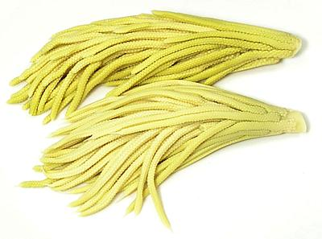

[Chamaedorea tepijilote and similar species]
[Chamaedorea tepijilote and similar species]
This palm is widely sold as a decorative "parlor palm" because it is slow growing and tolerates shade. The unopened male inflorescences are harvested in Central America and Mexico for sale in local markets as a luxury vegetable. They are also put up commercially in jars of brine for export out of the region. They can be found in markets serving Central American and Mexican communities. Unlike Hearts of Palm, harvesting these does not kill the palm (as claimed on the Useful Tropical Plants site). Male and female inflorescences are on separate plants. The small black fruits are not eaten and are probably toxic.
The flower clusters, which are boiled briefly before eating, have been compared to asparagus in taste and texture, however this is just plain wrong. They most resemble, in color, appearance, taste, and texture, baby corn - in fact the Nahuatl name Tepijilote translates to "mountain corn". They can be served alone as a vegetable but often appear with scrambled eggs or other dishes where they are lightly fried. Some complain they are very bitter, but in my experience the brined ones are not much more bitter than baby corn. Fresh and unboiled they are more bitter.
The photo specimens of fresh Pacaya "chibs" as cut from the palm tree were purchased from a large market in Los Angeles (Burbank) specializing in Mexican and Central American foods. The largest was 10-3/8 inches long, 1-5/8 inch diameter and weighed 7-1/8 ounces. Cost was 2017 US $4.99 / pound.
More on Palms.

This is the form in which Pacaya is commonly available in North America.
They're pretty much the same as fresh, but having already been par boiled
and packed in jars of brine, they will be a little less bitter.
Some people simmer Pacaya in a couple changes of water if they can't stand even moderate bitterness, but most Pacaya affectionados appreciate the bitterness, as do I.
Finding recipes for these is surprisingly diffciult. I have determined several ways in which they are prepared.